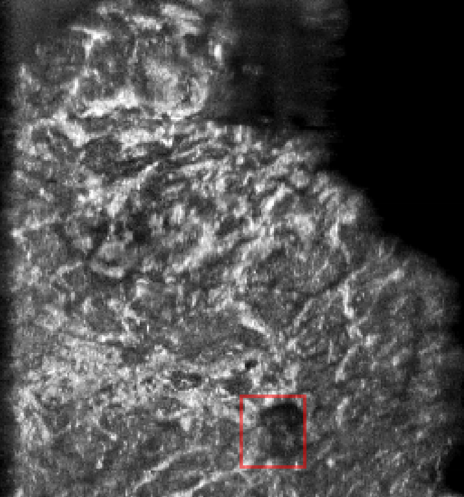
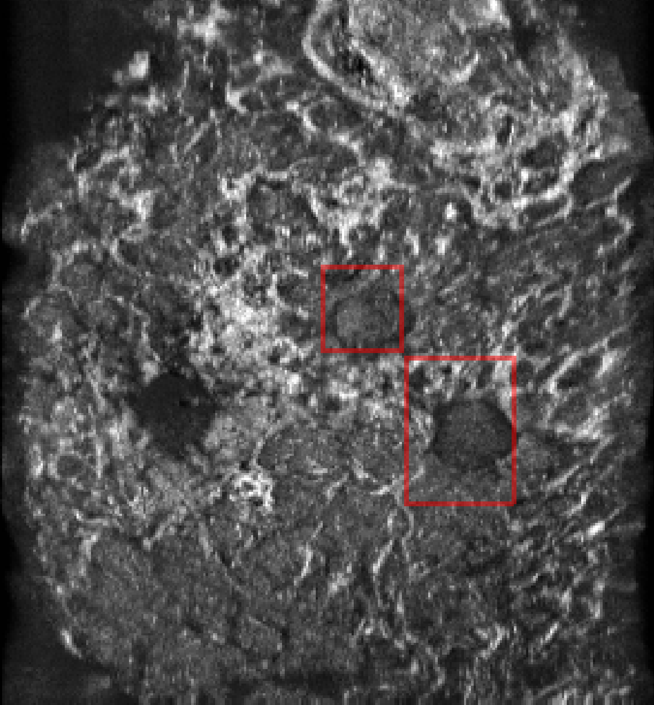
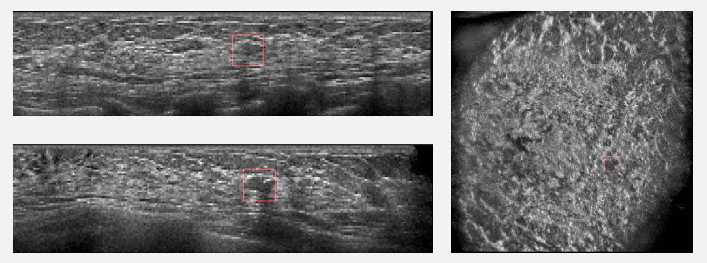
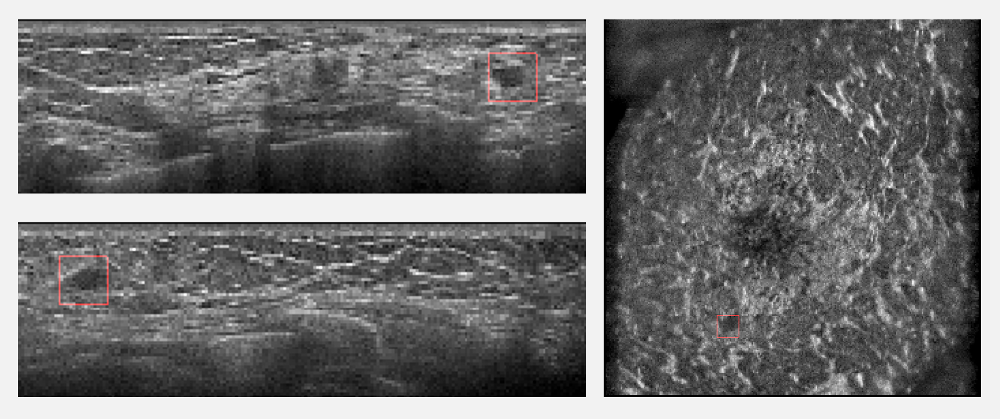

Breast cancer detection and diagnosis

Published Wed 06 September 2023
The application of computer-aided technology in medical imaging has made significant advancements, particularly in the field of breast cancer detection and diagnosis. Our research focuses on developing computer-aided systems for breast cancer detection and diagnosis using various medical imaging techniques such as X-ray, CT, MRI, and ultrasound.
Breast tumor recognition and classification have become a prominent area of research in computer-aided diagnosis (CAD). The key components of breast image classification include image pre-processing, feature extraction, feature selection, discrimination between benign and malignant tumors, and disease prediction modules. Feature extraction plays a crucial role in this process. Traditional machine learning methods that rely on hand-crafted features often lack robustness in accurately classifying benign and malignant breast tumors. In recent years, deep convolutional neural network (CNN) models have been proposed for object detection and classification tasks. CNN-based methods have shown great promise in extracting high-dimensional abstract features from ultrasound images, leading to high-performance analysis in breast cancer diagnosis. However, deep learning models typically require training on large datasets for improved generalization.
Collecting large datasets of medical images is challenging, particularly due to issues related to patient privacy. Additionally, the process of labeling medical ultrasound images adds to the workload of physicians. Our mission is clear: to enhance the accuracy of benign and malignant breast tumor detection and diagnosis using existing data by leveraging transformer and generative AI synthesized images.
By utilizing transformer models and generative AI techniques, we aim to improve the performance of breast cancer detection and diagnosis with limited available data. Transformer models have shown remarkable capabilities in capturing complex dependencies in data, while generative AI can generate synthetic images that augment the existing dataset. These synthesized images can help in training deep learning models to improve their generalization and performance.
Our research is driven by the goal of enhancing the accuracy of breast tumor detection and diagnosis, even when faced with limited data availability. By leveraging the power of transformer models and generative AI, we aim to develop robust computer-aided systems that can assist medical professionals in accurately identifying and classifying benign and malignant breast tumors.
Project leaders
XiangyuXiong
Partner Organisations
杭州市第一人民医院
Project Example




These pictures show the detection results of our breast cancer detection model in the ABUS data set, and the masses in the red border box are the breast masses detected by the model.
Automatic Detection of Breast Lesions in Automated 3D Breast Ultrasound with Cross-Organ Transfer Learning

Published Tue 21 May 2024
Breast cancer is a widespread disease that endangers the declaration, effective detection and diagnosis methods are needed to improve the prognosis of patients. At the present stage, most breast cancer screening relies on 2D breast ultrasound, which requires radiologists to imagine the 3D composition of breast lesions. Automated 3D Breast Ultrasound (ABUS) solves this problem very well, and more and more computer-assisted diagnosis (CAD) software developed for ABUS is emerging to reduce the burden on radiologists. However, due to the relatively small popularity of ABUS and the protection of patient privacy by laws and regulations, training CAD software often encounters the problem of small datasets, which limits the software’s performance.
We proposed a cross-organ and cross-modality transfer learning method. The detection experience of lung nodules was transferred to the detection of breast lesions and compared with the results transferred from the breast MRI and ABUS datasets. And we also proposed two contrastive learning methods based on BI-RADS grading, which perform contrastive learning at both lesion-level and grade-level. We explored the possibility of using clinical indicators instead of gold standards in deep learning.
The experimental results on lung nodules, breast Magnetic Resonance Imaging (MRI), and ABUS datasets show that the detection experience of transferring lung nodules in breast cancer detection tasks effectively improves the model’s performance, with average sensitivity increased by up to 4.82%. In the ABUS dataset with a relatively large amount of data, transferring lung nodule detection experience achieved better results compared to transferring breast MRI detection experience, performance improvement increased by 1.03%. The experimental results on the ABUS dataset showed that both methods helped improve model performance, and the contrastive learning method at the lesion-level showed better performance, with a maximum sensitivity improvement of 3.38%.
Project leaders
Zhengrui Huang
Partner Organisations
杭州市第一人民医院
Project Example

Predict case from our model, the red box represents the possible lesions predicted by our model.